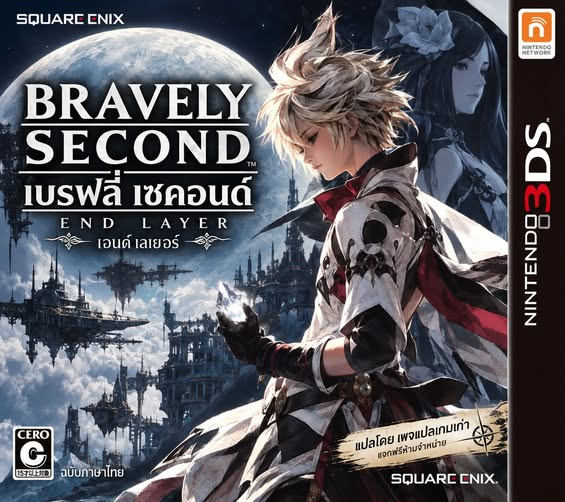

NINTENDO 3DS · USA · แพตช์ภาษาไทย
แพตช์รอมบนเครื่องคุณผ่านเบราว์เซอร์ ไฟล์เกมไม่ถูกอัปโหลดไปยังเว็บไซต์
ปรับชุด Luma · build009 · รุ่นทดสอบ
จัด ZIP Luma ให้เหลือโฟลเดอร์ luma และ README_TH.txt พร้อมคู่มือติดตั้งโดยเฉพาะ · ไฟล์ม็อดภายในคงเดิมทุกไฟล์ · แพตช์ออนไลน์ผ่านการทดสอบดาวน์โหลดแล้ว ยังไม่ได้ยืนยันการเล่นบนเครื่องจริง
ใช้รอม USA ต้นฉบับแบบถอดรหัส ขนาด 4,294,967,296 ไบต์ (4 GiB) รหัสเกม 000400000017BA00 ระบบตรวจ SHA-256 ก่อนเริ่ม ไม่รองรับ .cia รอมตัดขนาด หรือรอมที่เคยแพตช์แล้ว
ดาวน์โหลดรอมภาษาไทย
แนะนำ Chrome หรือ Edge บนคอมพิวเตอร์ และพื้นที่ว่างอย่างน้อย 10 GB อย่าปิดหน้านี้ระหว่างทำงาน ข้อมูลแฮชและรุ่นแพตช์
ใช้ชุด Luma แยกต่างหาก ไม่ต้องแพตช์รอม .3ds บนหน้านี้
ดาวน์โหลดชุด Lumaตรวจไฟล์และการแพตช์แยกจากการเล่นจริง ชุดนี้ยังไม่ได้ยืนยันการเปิดเกม ฉากที่เคยค้าง หรือการเล่นบนเครื่อง 3DS จริง ความกว้างข้อความเป็นการตรวจออฟไลน์ และยังมีข้อจำกัดการจัดวรรณยุกต์ไทยบางรูปแบบ
ใน Azahar ให้ปิดม็อดเก่าของเกมเมื่อใช้รอมที่แพตช์แล้ว เลือกภาษา English และเริ่มจากเซฟปกติ ไม่ใช้ Save State ต่างรุ่น